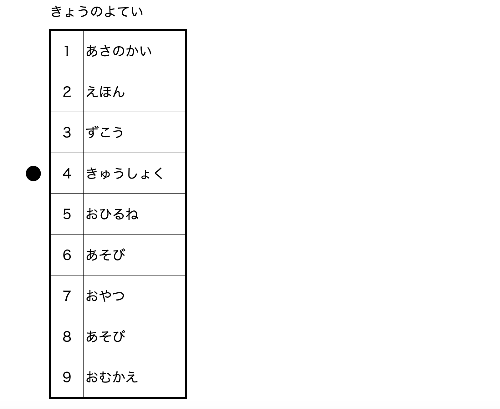
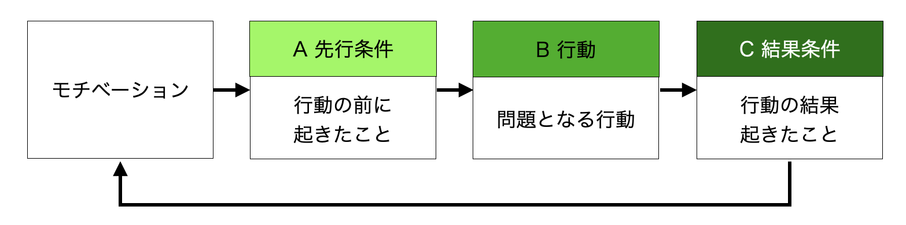
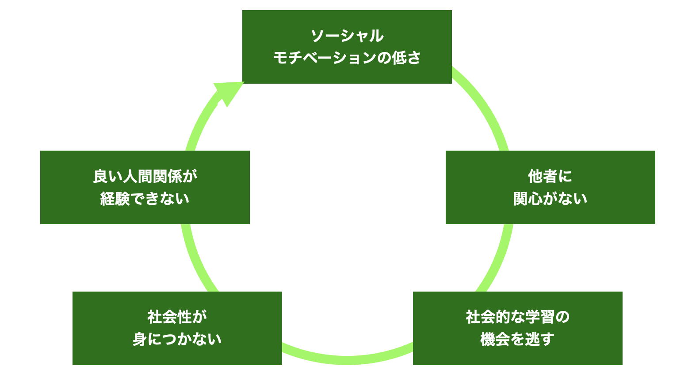

ASDの支援
- 自閉スペクトラム症(ASD)
- 脳
- 心理
- 薬
- 支援
ASDの支援
ASDは社会生活の基本である対人関係の障害です。人間が社会を作って生きる生物である以上、現状、生活する上で少なからず対人関係は必要です。
ASDがあると、独特の情報のとらえ方や処理の仕方があるので、定型発達の人との対人関係で違和感が生じることがあります。現状、学校生活などでは、定型発達の人の基準で生活がまわっているので、なおさらです。うまくいかないことの原因を周囲に帰属させれば攻撃的になり、自分自身に向ければうつ状態になります。
ASDのある子どもへの支援は、次の5つの柱で考えるとよいでしょう。
- 関係性を育てたり、ASDのある人の世界を尊重する（興味・関心を大事にする）
- 見通しがもてるように、情報をわかりやすくする
- 感覚の問題や共存症状への配慮をする
- 適応的な行動を教えることで生活を安定させる
- トラブルを起こさない工夫をする
関係性を育てたり、ASDのある人の世界を尊重する
ASDのある子どもたちは、日常生活を送るために大変な苦労と努力を必要とします。日本の高機能ASD者として有名なニキ・リンコさんの言葉を借りれば、「定型発達の人がオートマチックでできることを、すべてマニュアルでやっている」ようなものだそうです。それにもかかわらずうまくやれないことが多く、努力に見合った結果になっていません。
友だちとの関係では、人とのかかわりを求めない子どももいますが、友だちがほしいのにうまくやれずに悩んでいるこどものほうが、はるかにたくさんいます。仲良くしたいのに、どうしてうまくやれないのかわからないので苦しいのです。
学校教育で教えることは、基本的には「タテマエ」です。しかし、実際の生活は「タテマエ」だけでは成り立ちません。「ホンネ」の部分も必要なのです。この二重構造が、ASDのある子どもたちにはわかりにくいのです。彼らは、道徳の授業で教わったとおりに生きようとして、より困難な状況に追い込まれてしまいます。ですから、ホンネの部分も含めて説明する必要があります。
ASDのある人には、独特の感じ方や理解の仕方があります。「どうしてあなたはそう考えるんだ」と感情的に批判することには意味がありません。独特の感じ方や理解の仕方の中に誤解がある場合は、彼らの感じ方を尊重し日常感じている生きづらさを理解した上で、論理的に検討するほうが建設的です。
見通しがもてるように、情報をわかりやすくする
ASDに特有の認知の偏りや情報処理スタイルへの配慮として「視覚的な手がかり」があります。情報を視覚化することの意味は、単に「見せる」というだけではありません。文字情報や図表は、音声言語と異なり瞬時に消えることがありません。その場に情報がとどまっているので、処理速度につまづきがあるASDのある人でも、自分の方略で情報処理をすることができます。
わかりやすいルール
定型発達の子どもは、いろいろな遊びをしながら、体験的にルールを理解していきます、ところが、ASDのある子どもたちは認知の偏りがあるために、ルールをうまく理解できないことが多いのです。ルール理解のための支援は、さまざまな方法があります。
一つのやり方は、ルールを整理して文章化し、紙に書いたものを見せる方法です。このときに、いくつかのコツがあります。まず、あまり細かいルールをすべて書かないこと。複雑になってしまうと、わかりにくくなります。ポイントを整理して示すほうが理解しやすいのです。ルール全体の骨子を説明し、必要があれば補助用紙を使って説明するほうがうまく伝わります。次に、書く紙の大きさを大きくしすぎないことです。ASDのある子どもは注意の範囲が狭い傾向にあるので、あまり大きいと一度にとらえることのできる範囲を超えてしまう可能性があります。また、当たり前と思うことはつい省略しがちですが、ASDのある子どもたちにとっては最も必要な情報です。
二つめのやり方は、子どもたちの前でやってみせる方法です。この方法は「モデリング」といいます。
肯定的ではっきりした表現
肯定的な表現とは何でしょう。「席を立ってはいけません」「教室から飛び出さない」これは、否定的な表現です。同じことでも、「席に座ります」「教室の中にいます」と言うと、肯定的な表現になります。どこが違うかというと、肯定的な表現のほうが「どう行動するべきか」という情報が入っています。ですから、肯定的な表現のほうがASDのある子どもたちにはわかりやすいのです。
また、「ちょっと待って」「あとでね」というような、曖昧な表現もわかりにくいのです。「5分待ってね」「3時になったら」というように、はっきりした表現のほうが伝わります。
何か失敗したときに「どうして、そんなことをしたの？」と聞いても、なかなか答えられないことがあります。「どうして」「なぜ」という質問の仕方は、範囲が広すぎて答えにくいのです。「何をやろうと思ったの？」「何がいやだったの？」と言った具体的な聞き方をすると、答えられることが多くなります。
環境調整：構造化
ASDの認知特性に合わせて、学習や活動をわかりやすく組織化、体系化する方法として「構造化」の手法があります。「構造化」は、もともとはTEACCH(Treatment and Education of Autistic and related Communication handicapped Children)の理念の一つでしたが、近年では、ASDのある人への支援で当たり前に用いられる手法になりました。
構造化には、無釣的構造化、時間的構造化、活動内容や順序の構造化、指示などの視覚化、があります。
| 手法 | 概要 |
|---|---|
| 物理的構造化 | 空間を区切り、活動を整理すること。「何をやる場所なのか」をわかりやすくする |
| 時間的構造化 | 時間を明確に区切ること。「今何をやるのか」をわかりやすくする |
| 活動内容や順序の構造化 | 「今取り組む活動」について、「何をどのような手順でやるのか」を具体的に明確に示す |
| 指示などの視覚化 | 活動内容や目標などの必要な情報を文字や絵カード（シンボル）などで示す |

感覚問題への配慮
ASDのある人には感覚の問題がみられます。本人にとっては苦痛を伴うものなので、我慢させるのではなく配慮することが基本になります。
2016（平成28）年に施行された障害者差別解消法では、障害による差別の禁止とともに、公的機関での「合理的配慮」の提供が義務となりました。官公庁からのパンフレットには、感覚の問題への配慮が記載されています。例えば、聴覚過敏のある子どものために、机やいすの足に緩衝材をつけて大きな音がしないようにすることや、ノイズキャンセラーなどの使用を認めることなどが紹介されています。
皮膚感覚が過敏な子どもには、頭をなでたりハグしたりすることが苦痛になる場合があります。高機能の子どもは、自分で説明できることがあります。子どもの言葉に耳を傾けて苦痛を減らしてあげることが大切です。
ASDのある子どもの一部は「視線を怖がる」ことがあります。「人の顔に興味がないから視線が合わない」という消極的な理由ではなく、「視線を避けるので視線が合わない」という積極的な拒否が見られるのです。この原因の一つに、アイコンタクトは刺激が強すぎる、ということがあります。感覚の問題の一つといってもよいかもしれません。
また、同時に二つのことができないため、目を合わせないほうが相手の話が聞ける、という場合もあります。無理に視線を合わせようとすると、円滑な行動ができなくなってしまいます。ASDのある子どもに「相手の目を見る」ことを指導するのは、発達を阻害してしまうリスクがあることを知っておかなければなりません。
適応的な行動を教える
望ましい行動を増やすことで、結果として望ましくない行動を減らすことができます。望ましい行動を増やすためには、この後解説している応用行動分析の手法が効果的です。
応用行動分析(ABA)
応用行動分析(Applied Behavior Analysis、ABA)は、行動主義心理学に基づく理論で、報酬を用いて、特定の行動を「強化」する（増やす）ことを基本原理としています。強化するために用いる報酬を「強化子」と呼びます。強化子はいわゆる「ごほうび」で、称賛や花まる、シールやポイントなど、子どもが喜ぶものなら何でもよいのです。
ABC分析（機能分析）
「ABC分析」は、行動を「先行条件(Antecedent condition)」「行動(Behavior)」「結果条件(Consequence)」という枠組みで分析する手法で、それぞれの単語の頭文字をとって「ABC分析」と呼ばれています。先行条件とは「行動の前にあった（起こった）刺激」であり、結果条件とは「行動によってもたらされた結果」のことです。近年では、これにモチベーション(Motivation)を加えたM-ABCという考え方もあります。
例えば、ある子どもの「友だちを後ろからおどろかす」という行動が問題になったとします。子どもAが「友だちと遊びたい」と思っているときに、先行条件として、「友だちBが遊んでいる」という場面に出会います。子どもAが、「相手をおどろかす」という行動をしたら、その結果として、友だちBがびっくりして振り返って、かかわってくれました。これで、子どもAのモチベーション「友だちと遊びたい」が達成されたことになり、「友だちを後ろからおどかす」という行動は増加します（正の強化）。
しかし、「友だちを後ろからおどかす」というのは望ましくない行動なので、先生は「遊びたいときは、一緒に遊ぼうと声をかけましょう」と教えました。「友だちBが遊んでいる」という場面で「一緒に遊ぼう」という声かけをしたら「遊んでもらえた」という結果になると、子どもAのモチベーション「友だちと遊びたい」が達成されたので、「一緒に遊ぼう」と声をかける望ましい行動が強化されます。
基本となるテクニック
望ましい行動を形成し維持させるために、「強化」「プロンプト」「フェイディング」「シェイピング」「連鎖化」「トークン・エコノミー」などの方法を用います。
強化(reinforcement)
ある行動に対して、期待どおりの結果が得られると、その行動は増えます。これを「強化」といいます。例えば、一定時間着席して学習に取り組むと、ごほうびにシールがもらえる、というようにすると着席行動が増えます。これを「正の強化」といいます。行動が起こったときにすぐ強化することを「即時強化」といい、大変効果的です。行動するごとに毎回強化することを「連続強化」、時々強化することを「簡欠強化」といいます。標的とする行動が高水準で起こるようになるまでは、連続強化が効果的です。その後は「簡潔強化」が効果的になります。
プロンプト(prompt)
「プロンプト」とは、望ましい行動ができるようにするための手がかりとなる刺激のことです。プロンプトは、指示のように言語で与えられるだけでなく、視覚的な手がかりや動作を伴うなどして与えられることもあります。
フェイディング(fading)
プロンプトを手掛かりにしながら、望ましい行動ができるようになったら、今度はプロンプトを減らしていきます。少しずつプロンプトを取り除いていくことを「フェイディング」といいます。フェイディングの方法としては、援助を減らす、段階的な誘導、時間遅延などがあります。
シェイピング(shaping)
シェイピングとは、新しい行動を身につけるために、目標となる行動に向かって近づけていくことをいいます。シェイピングには、「分化強化」が非常に重要になります。「分化強化」とは、さまざまな行動の中で目標となる行動は確実に強化し、それ以外の行動は強化しない、ということです。強化のための基準は、目標に近づくように少しずつ変化させていきます。また、最終的な目標に向かって徐々に段階をふんで近づけていく（漸近的接近）ように基準を設定していきます。
連鎖化(chaining)
目標とする課題について、子どもが一蓮の行動として獲得できるようにしていく手続きを「連鎖化」といいます。どんな行動がどのようにつながっているかを分析し、子どもにとって習慣化しやすい連鎖順を決定します。連鎖順にしたがって、子どもが一人でやりとげられるように「行動連鎖」を形成していく方法です。
トークン・エコノミー(token economy)
「トークン・エコノミー」とは、トークン(代用貨幣:お金の代わりのもの)を使って強化するシステムのことです。代用貨幣としては、シールや○印。ポイントなどを使います。
まず、子どもと相談して、目標となる行動や交換する条件を具体的に決めておきます（紙に書いておくといいです）。例えば、朝、自分から新聞を取ってきたら○が1個（トークン）もらえ、○が10個たまったら、おやつを選ぶ権利をもらえる（支持強化刺激）、といったことを具体的に決めておきます。これを積み重ねて、望ましい行動を増やしていこうとするものです。
この他に、不適切な行動を減少させるための方法としては、①タイムアウト(time out)、②レスポンスコスト(response cost)、などがあります。タイムアウトは、一定時間、正の強化子を与えない方法です。具体的には、一定時間トークンを与えない、注目しない、という方法などがあります。レスポンスコストは、望ましくない行動に対して、強化子を取り去る（トークンを取り上げるなど）ものです。罰金制度もレスポンスコストの一つと考えることができます。
TEACCH自閉症プログラム
ショプラー(Eric Schopler)によって提唱されたTEACCH(Treatment and Education of Autistic and related Communication handicapped Children)は、ノースカロライナ州で取り組まれている自閉症児のための包括的プログラムです。2020年現在は、Klingerが中心を担っており、TEACCH(Teaching, Expanding, Appreciating, Collaborationg and Cooperating, Holistic)としています。TEACCHの理念や構造化の手法、言語心理学的な立場に立ったコミュニケーション指導法などは、多くの専門家に受け入れられて応用されています。
TEACCHの目的は、自閉症のある人が社会の中で有意義に暮らし、できるだけ自立した行動をすることです。TEACCHではスケジュールやワークシステムなど、目に見える構造化の手法がよく使われ、さまざまな教育の場で取り入れられています。構造化の方法は、個々の子どもの特性やそのときの状況に応じて柔軟に対応していくべきだと考えられています。TEACCHの思想で最も大切なことは、自閉症のある人の立場に立って「自閉症の特性から出発する」という点です。
SPELL
SPELLは、イギリス自閉症協会が提唱している自閉症教育の理念です。Structure, Positive, Empathy, Low arousal, Links の頭文字をつないだもので、TEACCHの理念と共通するものがあります。
- STRUCTURE(構造化):わかりやすい工夫や配慮、時間、空間、意図の視覚化
- POSITIVE(肯定的アプローチ):ほめる、動機づける、適切な期待
- EMPATHY(共感的理解):自閉症特性の理解、独自の理解の仕方への共感
- LOW AROUSAL(低覚醒、おだやかな環境):刺激の少ないおだやかな環境、ストレス源を減らす
- LINKS(連携):経験、認知、時間のつながり、他機関との連携
社会性を教える
ソーシャルスキルトレーニング(SST)
ソーシャルスキルとは「人とうまくかかわっていくための技能」のことです。当たり前のことですが、所属する社会・文化・集団によって適切なスキルは異なります。ソーシャルスキルは、トレーニングによって身につけることができます。ソーシャルスキルを教えるための方法がソーシャルスキルトレーニング(Social Skill Training:SST)です。
SSTの指導者の基本的な姿勢としては、①温かく受容的な態度、②うまくできないときは叱るのではなく修正する（適切なスキルを教える）、ということが重要です。SSTの「基本的なステップ」は次の手順です。
- イントラクション（教示）
- モデリング（お手本）
- リハーサル（練習）
- 実行
- フィードバック（評価）
- 般化と維持（定着）
「般化」とは、トレーニングで学んだスキルが、さまざまな場面や相手に対してできるようになること、「維持」とは、できるようになった状態を保ち続けることをいいます。
日常生活で、小さい子どもには①〜⑥の「基本のステップ」で教えていることが多いと思います。例えば、「知っている人にあったらあいさつをしましょう（イントラクション）」「こんな風に「こんにちは」といいます（モデリング）」「じゃあやってみてごらん（子どもがやってみる:リハーサル）」といったように教えてから、実際にあいさつできると、ほめる（フィードバック）、というようなことはよく見られます。SSTという言葉は知らなくても、実際には日常的に行われているだろうと思います。
「般化」し「維持」するためにはまず、生活の中で必要性・必然性の高いスキルを取り上げること、次に、学習したソーシャルスキルを日常生活の中で使う機会を作ることが作ることが重要です。
学齢を重ねていくと「できて当たり前」になってくるので、基本のステップをやらなくなります。しかし発達障害の子どもの場合は、ていねいに基本のステップをふんだほうがうまくやれることも多いのです。ASDのある子どもたちは、思いがけないような行動や反応をすることがありますが、決して悪意からではなく、社会的な理解がうまくできていないための結果としての不適切な行動です。ASDのある子どもは、とても繊細で傷つきやすく、大人が「ちょっとした」叱責のつもりのことでも全否定になってしまうことが少なくありません。ですから、不適切な反応や行動に対しては叱るのではなく、行動を修正する（適切なスキルを教える）ようにします。ASDのある子どもたちは、マニュアル的な知識が入るとうまくやれることが多いので、SSTの効果は大きいといえます。
自己モニタリング
社会性の成長のためには、自分自身を客観的にとらえる（自己モニタリング）の力も必要です。自分の行動を振り返って、良い結果をもたらす行動は増やし、まずい結果をもたらす行動は修正する、ということの積み重ねで、良好な社会性が身についていくからです。そのためには、メタ認知（補足する）の発達とともに、前後の情報と自分の行動、その結果とを統合するための手がかりが必要になります。
ASDがあると、中枢性統合の弱さや実行機能の問題から、情報の一部にしか注意が向いていなかったり、把握した情報が断片化したりしやすいのです。自分の言動がきっかけで相手を怒らせてしまいトラブルになったのに情報が断片化して、最後に自分が批判された部分にしか目が向かないと「いじめ被害」として訴えることがあります。
コミック会話とソーシャルストーリー
コミック会話とソーシャルストーリーは、どちらもキャロル・グレイ(C.Gray)が提唱している自閉症児のための指導方法です。
コミック会話は、人物を線画で描いて、吹き出しの中にセリフを入れていくものです。コミック会話は、マンガのような吹き出しを使うことで、実際にあったことを視覚化・定着化し理解しやすくします。
ソーシャルストーリーは、社会的状況をお話（ストーリー）にすることで、自閉症のある子どもに適応的行動をわかりやすく教えようとするものです。自閉症の認知特性を配慮したソーシャルストーリにすることが大切です。
社会的行動表
社会的行動表は、ASDのある人の行動、その行動に対して相手が思ったこと、結果起こることを表にすることで因果関係をとらえやすくするものです。
ソーシャルモチベーションに注目した指導方法
ソーシャルモチベーション理論に基づくと、ASDの社会性の障害は、社会的な学習障害としてとらえる事ができます。下図の悪循環の結果として、社会性の障害が生じると考えるのです。この考え方から、社会性の学習の障害が生じる前の段階（発達早期）に良好な関係性を経験することで、ソーシャルモチベーションを高めれば、学習の機会を逃さずにすみ、社会性の発達が促進できるだろう、という仮説が成立します。
ソーシャルモチベーションに注目した指導方法として、PRT(Pivotal Response Training)、ESD(Early Start Denver Model)、JASPER(Joint Attention, Symbolic Play, Engagement, and Regulation: 共同注意、象徴遊び、かかわり、調整)などの指導方法が開発されました。PRTはソーシャルモチベーションを高めることに特化した指導方法です。介入の主軸となる領域をピボタル領域（参考文献）として、モチベーション、自発性、質問をすることを最重要と考えています（参考文献）。PRTは、後のESDMやJASPERにもつながっていきます。
ESDM(Early Start Denver Model)
ESDMは、5歳までの定型発達の発達理論の研究をふまえて開発されました。ソーシャルモチベーション理論の影響を強く受けており、ASDの共同性注意や社会性の障害は、他者の顔、声、身振り、会話など、身のまわりの社会的情報に注意を向けないことから学習の機会を逃した結果であると考えています。そのため、関係発達焦点化モデルを中心として応用行動分析の指導方法を統合したアプローチを行います。
ESDMは、乳幼児が発達的に未分化であること、ASDのある子どもは社会性だけでなく運動発達や身辺自立などのすべての領域に障害がみられることから、すべての領域を対象とした包括的早期行動介入プログラムを提供しています。生後12ヶ月から48ヶ月の乳幼児期に大人との質の良い関係をもつことで、模倣学習ができるようになり、良好な発達につながる、という考えに基づいています。幼児は、興味（モチベーション）をもって経験するものを学習し獲得していきます。また、日常生活で接する情報を獲得できるようにすることの重要性から、保護者を重要なパートナーとして位置づけ、保護者コーチングをモデルの中に組み込んでいます。
加えて、ヴィゴツキーの発達理論も重視していて、「発達の最近接領域(P領域)」への働きかけを積極的に行うとしています。「発達の最近接領域」とは、ヴィゴツキーの発達理論の中心概念です。「できること」と「できないこと」の間に「できたりできなかったりすること」あるいは「少し手伝えばできること」があり、これを発達の最近接領域療と名付けました。子供の学習では、この発達の最近接領域を目標に設定することが、確かな成長につながると考えられています。療育計画は、カリキュラムチェックリストを用いて、「受容言語」「表出言語」「微細運動」「粗大運動」「社会的興味」「遊びのスキル」「模範」「前学習能力」「適応行動」「共同注意」の10領域について、P領域を同定し目標とするスキルを決定します。この療育計画は12週ごとに評価し、段階的にステップをふんでいくようにしていきます。
ASDのある乳幼児の狭い興味や関心に寄り添い、良好な関係性をもてるようにするためには、高い専門性が必要です。乳幼児の成長の手がかりを的確に把握し、積極的に働きかけて発達を促します。教え込むのではなく、乳幼児が楽しく遊べるようなかかわりの中で実践していくのです。
例えば、風船やシャボン玉を飛ばすことは、多くのASDのある幼児にとって魅力的なものです。風船をふくらませて手を離すと、勢いよく飛んでいきます。子どもが喜んで追いかけるので、何回か繰り返します。途中で、中断を入れるのです。風船をふくらませようとする動作のところで止めます。子どもは早くやってほしそうにします。そこで、「もう一回？」と問いかけます。これを繰り返すと「もう一回」と言えばふくらませてくれる、ということがわかり、子どもから「もう一回」という要求が出るようになります。要求の言語の学習ができたのです。
JASPER(Joint Attention, Symbolic Play, Engagement, and Regulation)
ESDMと同様、JASPERは関係性を基盤として臨床指導ですが、特に共同注意に焦点を当てています。12ヶ月〜8歳のASDのある子どもの興味に寄り添うことで共同注意の発達を促すプログラムで、その名称のとおり、共同注意、象徴遊び、かかわり、調整を基本としています。遊びを通して介入し良好な関係性の発達を促進する点は、ESDMとよく似ています。
介入(支援)の焦点は、コミュニケーションとしてのジェスチャーと言葉であり、単純な遊びから組み合わせ遊び→前象徴遊び→象徴遊びへと発展させていきます。JASPERの基本はセラピストとの1対1のセッションですが、複数の子どもたちとの遊びを通して行うものを「JASPEER」、親や保育士、幼稚園教諭等が子どもとの遊びを通して行うものを「JAS-PER」としています。
| ESDM | JASPER | |
|---|---|---|
| 対象 | 発達早期(12ヶ月〜48ヶ月)の乳幼児 | 12ヶ月〜8歳 |
| アプローチ | 包括的支援 | 共同注意を重視 |
| 実施者 | 訓練を受けた専門家、親 | 多様な専門家 |
| 特徴 | 週20時間を基本、日常生活場面での個別指導が中心 | 個別指導中心だが学校場面でも実施 |